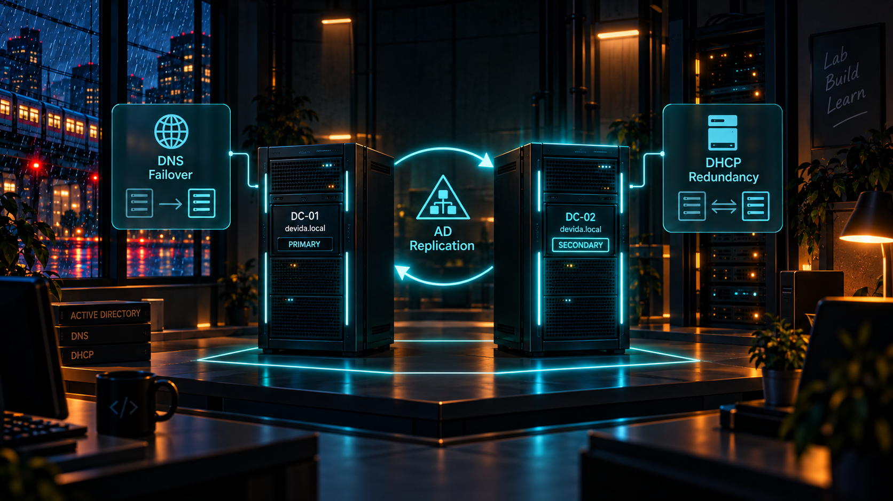

En clair
Qu'est-ce que c'est ?
Le second contrôleur de domaine est un deuxième serveur Active Directory qui travaille avec le serveur principal afin d'éviter qu'un seul serveur soit indispensable au fonctionnement du domaine.
Analogie simple : C'est comme avoir une copie de secours d'un service essentiel : si un serveur est indisponible, l'autre permet de conserver les services principaux du domaine.
Utilité
À quoi ça sert ?
- Ajouter de la redondance à Active Directory.
- Répliquer les informations du domaine entre deux serveurs.
- Améliorer la disponibilité des services DNS/DHCP décrits dans le projet.
DEVIDA
Ce que j'ai mis en place
- Déploiement d'un deuxième contrôleur de domaine.
- Mise en place de la réplication Active Directory.
- Objectif de redondance et de haute disponibilité pour l'infrastructure DEVIDA.
Vocabulaire
Les mots techniques expliqués simplement
Réplication
Copie automatique des informations Active Directory entre les contrôleurs de domaine.
Copie automatique des informations Active Directory entre les contrôleurs de domaine.
Redondance
Présence de plusieurs équipements capables d'assurer un même service.
Présence de plusieurs équipements capables d'assurer un même service.
Haute disponibilité
Organisation visant à garder un service accessible même lorsqu'un élément rencontre un problème.
Organisation visant à garder un service accessible même lorsqu'un élément rencontre un problème.